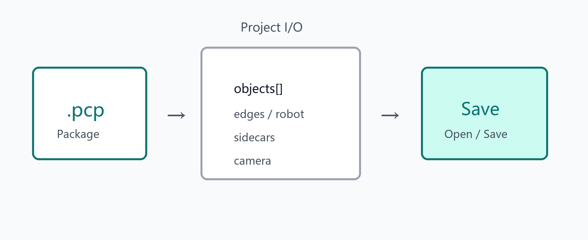

.pcp
processFlow
geometricModeling
engineeringDrawing
Tree visibility is persisted. Export PLY/STEP from the object tree context menu when applicable.
CloudSim User Help · Select a chapter from the left TOC